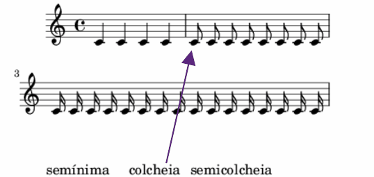

<section class="container-content">
    <div class="d-flex flex-column justify-content-around etapa1-texto ">
        <div>
            <h5>No exemplo abaixo, temos a representação da colcheia e da semicolcheia em uma partitura musical.</h5>
            <p>A colcheia indica metade (<math class="math">
                <mfrac>
                    <msup>
                        <mi>1</mi>
                    </msup>
                    <mn>2</mn>
                </mfrac>
            </math>) de 1 tempo e a semicolcheia indica um quarto (<math class="math">
                <mfrac>
                    <msup>
                        <mi>1</mi>
                    </msup>
                    <mn>4</mn>
                </mfrac>
            </math>) de 1 tempo.</p>
        </div>
        <div>
            
        </div>
    </div>
</section>

<div class="btn-etapas-container">
    <div class="btn-container">
        <button id="btn-voltar-context" onclick="btnVoltarEtapas(conteudo_etapa10.etapa10Conteudo30, 10)" class="btn selecao-etapas-btn" role="button">Voltar</button>
    </div>
    <div class="btn-container">
        <button id="btn-avancar-context" onclick="btnAvancar(conteudo_etapa10.etapa10Conteudo32, 10)" class="btn selecao-etapas-btn" role="button">Avançar</button>
    </div>
</div>